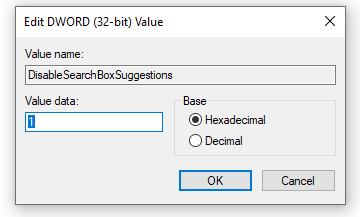

How to disable web search results in the start menu
Windows 10 & Windows 11
- Windows + R, type
regeditand hit enter. Accept the UAC prompt that shows up. - Navigate to
HKEY_CURRENT_USER\SOFTWARE\Policies\Microsoft\Windows\. -
If there is no key named
Explorerright-click and create one. - Right-click to add a new
DWORD valuenamedDisableSearchBoxSuggestions. -
Double-click it and set its value data to
1.
- Open the Task Manager and restart
Windows Explorer.